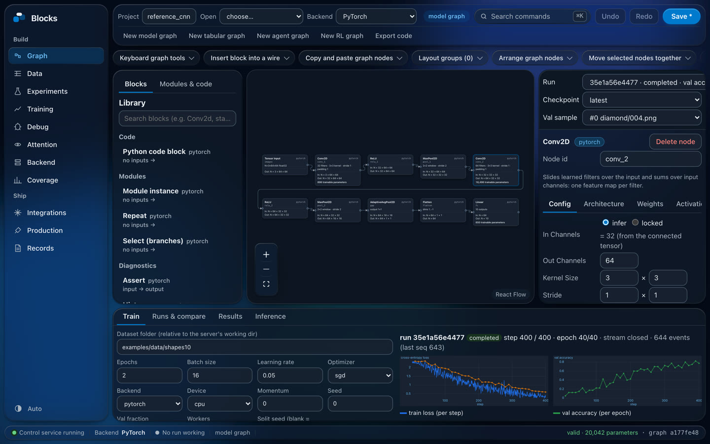
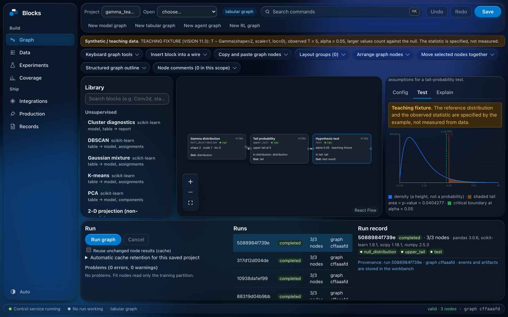
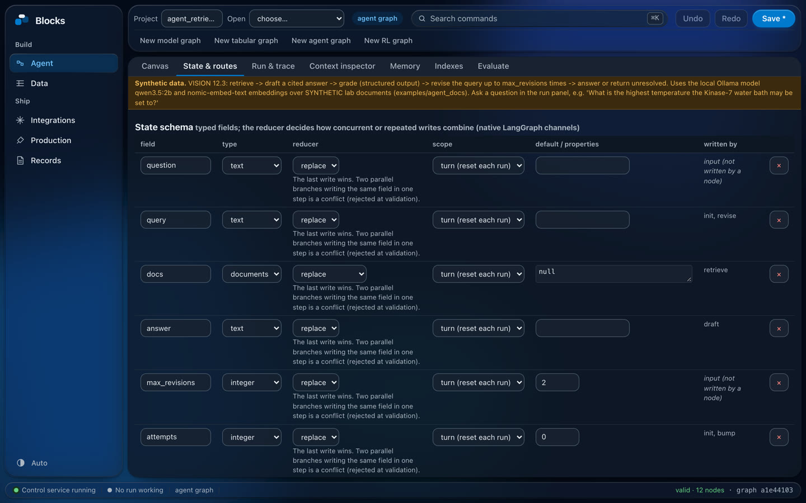
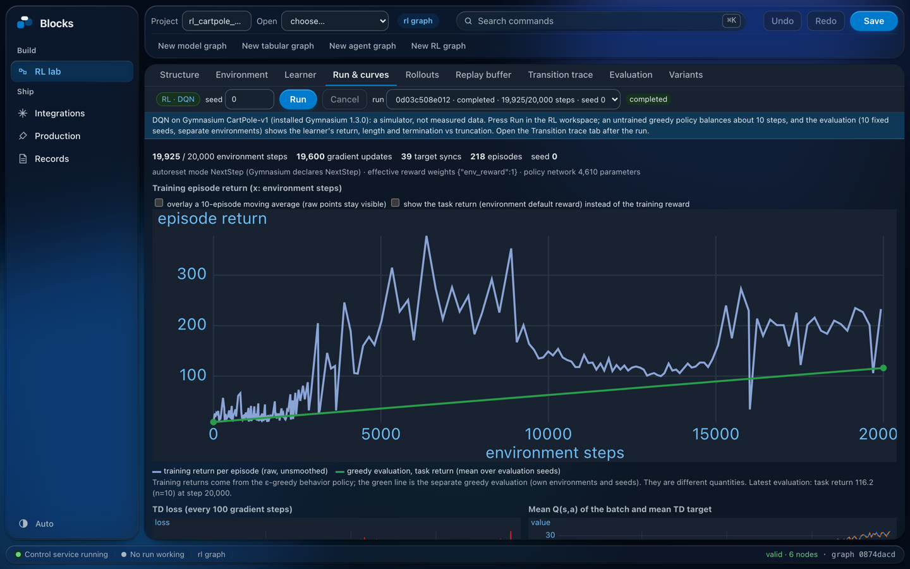

Blocks is a visual workbench: build models, data pipelines, AI agents and reinforcement-learning experiments by connecting blocks, run them on your own machine, and see what every piece did.
Pick blocks from a library of 118 and connect them. Every wire shows the shape of the data on it, every block shows its parameters, and a mismatch turns red before anything runs.




Wires of different kinds never mean the same thing, so a tensor can't be plugged into a table by accident. 37 example projects are ready to open.
Layers, losses, reusable modules and Python code blocks.
Data preparation, classical ML, statistics tests, clustering.
Typed state, routes, bounded loops, tools and approvals.
Environments, reward components, replay buffers, DQN and TD3.
Typed vision, NLP and speech workflows with recorded inspection.
From the first block to a served model, without leaving the app.
The reference CNN built from its graph against the same network written by hand, one training step on CPU (Apple M4 Pro, batch 16).
| Train step | Hand-written | From the graph | Ratio |
|---|---|---|---|
| PyTorch | 17.41 ms | 17.30 ms | 0.994 |
| Keras 3 | 13.51 ms | 14.09 ms | 1.044 |
| JAX | 7.81 ms | 7.90 ms | 1.011 |
Median of 5 fresh processes × 50 timed calls each. Raw data and method: benchmarks/results/m6a_summary.md.
Python 3.13+, Node.js and pnpm. Nothing is sent anywhere.
python3 -m venv .venv .venv/bin/pip install -r python/requirements.txt && .venv/bin/pip install -e . pnpm -C apps/editor install python -m uvicorn control.app:create_app --factory --app-dir services --port 8000 pnpm -C apps/editor dev # then open http://127.0.0.1:5173